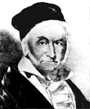

Penn State Algebra and Number
Theory 

This is the webpage for Penn State's group in
algebra and number theory.
This group consists of
regular
faculty
members,
post-docs,
visiting faculty members,
and graduate students.
This group is also responsible for teaching linear
programming and game theory.
New web page (under construction)
Talks
2004 Math Calendar
|
Algebra & Number Theory Seminar. | Spring of
2008
| Spring of 2010 |
S2000
| F 2000|
S 2001
| F2001|
S2002
|
F2002
Ravi Rao
| S2003
Robert Griess
. Robert Griess | S2004
|
Andrews celebration
| Fall
of 2004 | Spring
2005 | Fall 2005 | Spring
2006 | Fall 2006 } Spring
2007 | Fal 2007 |
PSU Mathematics Department
- Calendar
PSU Operations Research Colloquium F2000
| April 6, 2004 |
Sept 21,2004
|
Links to some interesting sites:
00 General: Yahoo Math
|
dmoz Math
| math encycl l
open problems
| math.com | about | mathsearch
|
mathworld | Clay problems
Problems |
| Math Quotes
| quotations
| discrete
math | Zagier's
problems (algebra,number theory, geometry) |
PSU math library
| Math Reviews
| Zentralblatt
Mat | Classification | math
atlas |FAQ
|
mathfront | AMS preprints
|
math conferences
| | math
jokes
more: 2 | 3
|
4
|
5 | 6 | ||Sosinski || constants
| math journals
|
01 History and biography : history of
math
| Fields
Medal | Nobel
Prize winners|
| Bourbaki
| Bombieri
| Chowla
| Dantzig|
Daubechies
, 2 | Deligne|
Dedekind
| Dickson
| Dieudonné
|
Diophantus | Dynkin|
Einstein|
Erdös
, 2
| Euclid
| | Euler
|
| Fermat
| Fibonaci
|Fourier
| Frobenius
|
Galois
| Gauss,2
| Gelfand
| Gelfond
| Gödel
|Goldbach
| Grothendieck
|
Hilbert's
Problems
& Hilbert
| Hecke
| Hypatia
|
Kantorovich
| | Kolmogorov
| Kovalevskaya
| Kaplansky
|
Langlands,his
work |Leibniz
|
Minkowski
, 2
|B.Mazur
| Moufang
| | Margulis
| | Mostow
& Piatetski-Shapiro |
Milnor
| Manin
| Nashfilm|
Novikov
|E.Noether
|Newton
|
| Pascal
Perelman || Poincaré
| Pythagoras
| | Riemann
J.Robinson
| Ramanujan
|
Sylow
| Selberg
| Serre
| Thurston
| Taussky
| Turing |
|Rota
| Ramsey|
| François
Viète father of algebra | van
der Waerden | Waring
| Weil
|
Weyl
|| Wiles|
Witten
| Zelmanov
| Zorn
|
03 Logic: fallacy |
math
mistakes |
05 Combinatorics: The Combinatorics Net
| LaCIM |La Jolla Covering Repository
|
| Electronic
Journal of Combinatorics -- Including the World Combinatorics
Exchange
|
| Séminaire
Lotharingien
de Combinatoire |
11 Number theory: number
theory
web | PI
| Chen Shuwen's Equal Sums
of Like Powers Page!
Equal Sums of Like Powers
| some
AltaVista
and
Yahoo number theory | The List of
Largest
Known Primes | preprints
|
| The Mathematics
of
Fermat's Last Theorem | Number field
tables
|
| Integer
Sequences
(by N.J.A. Sloane) | abc | Beal's conjecture
| Riemann Hypothesis | High On E:
The Mathematics of Transcendence - tribe.net
Somos sequences
| pacomania
|
11-04,11Y Computational number theory| NTL | algorithms
| quantum
computing | 2 | 3 | 4 | 5 || primality testing is P
|
11K45 Pseudo-random numbers: Pseudorandom
Number Generators | How
to Generate Pure Random Numbers | Salzberg
|
11T71 , 14G50, 81P68 ,94A60 cryptography:AltaVista
| Yahoo
| cryptology (IACR) | cryptology
| elliptic
curves
|
algebra: algebra
| |Abstract Algebra
On Line
(Dictionary) | Catalogue
of Algebraic Systems |
computer algebra: | Computational Algebra and Geometry
| Computer Algebra Information Network
|
| Ecole Polytechnique, GDR
MEDCIS
| GAP
| PSU math dept software
page
|
12 Field theory and polynomials: 12E20 finite
fields computations
14. Algebraic
geometry: | 111G 14G arithm geometry
| elliptic
curves | 15. Linear algebra: International
Linear Algebra Society | definitions
|
16 17 Rings: ring theorists |
18. Categories: Categories Home
Page
| Theory and Applications of
Categories|
dmoz
| 19 K-theory | Dave
Rusin | TMR
|
20 Group Theory and generalizations:Geometric Group Theory
| Group pub
forum
| linear
groups
| wallpaper
groups
|dmoz
|
GAP |
20C Representation theory of groups:finite groups | Moonshine
|
20M semigroups: |
Semigroup Forum
| Semigroups
page (by JH Renshaw) |
52C Pennrose tillings: 1
| 2
| 3
|| Pennrose at PSU |
90. Operations research, mathematical programming: |
Mathematical
Programming
Glossary |
| Bibliography for
Discrete
Event Systems Simulation: Optimization and Sensitivity Analysis
|
| Global
optimization
page (U Wien) | Global optimization
page
(BU) |
Tom Cavalier's
Optimization Links |Michael Trick's
Operations
Research Page |
| Mathematical
Optimization
TU Braunschweig | traveling
salesman | Interesting
Models
|
| Applied
Management
Science | INFORMS
Online |
Mathematical Programming Society
|
SIAM optimisation
|
Interior
Point methods | Steve Wright
|
91 Game theory, economics, social and behavioral
sciences:
| Game
of
Life | 2 |
|
games
| | Chronology
of Game Theory |
blackjack | blackjack| Nim | car
&goats | | games and math
programming
|
cellular automata
|
combinatorial game
theory |Society
for Mathematical Pychology |
92 Biology and other natural sciences:Math-Bio White Paper
|
97 Mathematical education: educause
| Common
UG math errors | WEB Tutorials
| teaching
math | The Braden Files |
Bas Brams | mathepower|A.Toom
|
college math: Dave's Tables
| Cool Math
| MBone
| Ask
Dr. Math | Professor
Freedman's Math Help |S.O.S
Math|
| Zoomtool
(ball&stick construction) | Math
FAQ | curves
|
Please, send updates and suggestions to
vstein@math.psu.edu

{kind=link}
{kind=link}